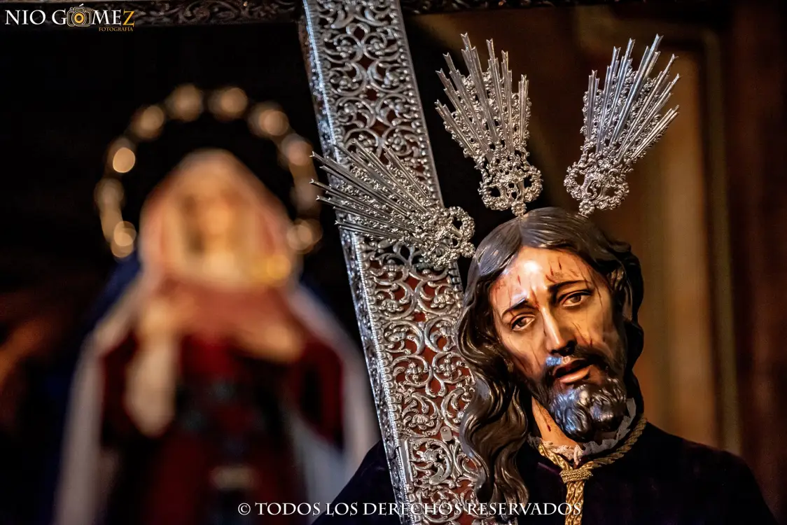
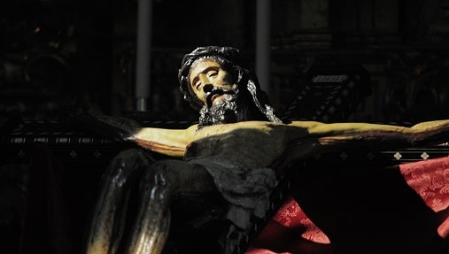
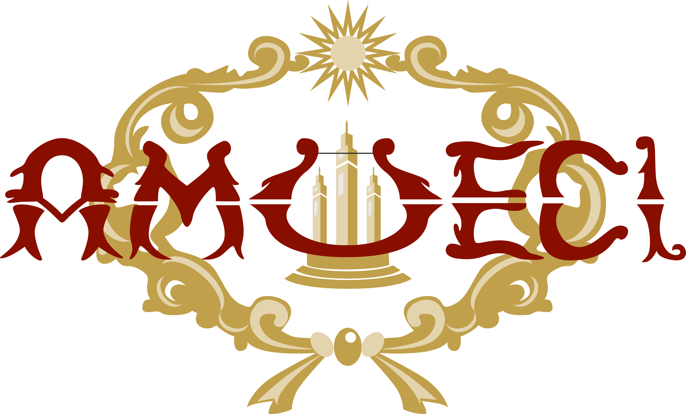

Procesión del Silencio
La Procesión del Silencio en Écija representa uno de los momentos más solemnes y conmovedores de la Semana Santa en esta histórica ciudad andaluza. Durante esta procesión, las calles se sumergen en un profundo silencio, interrumpido únicamente por el sonido solemne de los pasos de los penitentes y el suave murmullo de las saetas que resuenan en la noche. Las luces tenues de las velas iluminan el paso de los pasos procesionales, creando una atmósfera de reverencia y contemplación. Los fieles, vestidos con túnicas oscuras, avanzan lentamente en fila, llevando consigo la devoción y el respeto por la Pasión de Cristo. Es un momento de reflexión y recogimiento, donde se revive de manera intensa el sufrimiento y la entrega de Jesús en su camino hacia la crucifixión. La Procesión del Silencio en Écija es un testimonio vivo de la profunda fe y la tradición arraigada en esta ciudad, y representa un encuentro íntimo entre la comunidad y su historia religiosa.
Cristo del Confalon
La imagen del Stmo. Cristo de Confalón está datada en el siglo XVI, de estilo renacentista con influencia gótica, de autor desconocido y que fue restaurada en el año 2000. Está clavado en una cruz ebonizada, con taracea de nácar, marfil y carey. Procesiona en un paso (trono) al más puro estilo ecijano (llevado a hombros de sus hermanos en dos “remuas”, la de los altos y la de los bajos), con peana barroca del siglo XVIII dorada. Es iluminado con candelabros de metal sobredorado en oro fino de guardabrisas y tulipas con lágrimas de cristal de roca. Para podernos hacer una idea de la esencia del concepto sobre el que se cimienta el estilo propio "confalonero" y sobre la simbología del paso del Cristo de Confalón, seguidamente se transcribe literalmente el artículo redactado por nuestro anterior Director Espiritual D. Luis Joaquin Rebolo González, que fue publicado en nuestro Boletín Confalonero de 2011:
El Rey de la Victoria
No cabe duda de que se está produciendo un cambio generacional en el mundo cofrade. Esto ha sido pretexto en los últimos años para la realización de interesantísimos replanteamientos en el seno de nuestras Hermandades, los cuales evidencian el necesario debate de ideas sobre el futuro y la identidad de nuestra Semana Santa. En efecto, la Semana Santa astigitana posee un rico patrimonio de cuño autóctono. Encrucijada de caminos, Écija supo atraer a los mejores para que trabajaran al más alto nivel; pero al miso tiempo que enriquecía su leyenda con las nuevas tendencias, moldeó su propio universo conceptual y generó un estilo propio, distinto, único. Hoy en día, se pueden seguir apreciando las características de estilo con cuño ecijano en casi todas las artes y en el patrimonio etnológico. Los acentos de una identidad extraordinariamente caracterizada consiguieron hacer de lo propio, de lo concreto, una aportación a lo universal.
AMUECI
Es la banda más reconocida de la localidad Ecijana. Destacamos de Amueci la presencia en numerosos actos sociales, culturales y religiosos en la Ciudad de Écija y fuera de ella. Así mismo, ha participado en encuentros de bandas de casi todas las provincias andaluzas; a su vez organizó el primer Encuentro de Bandas de Música “Ciudad del Sol”, llegando a contar con quince ediciones. En dos ocasiones fue tercer premio en el Concurso de bandas de Música de Andalucía que se celebraba en Ronda. En el Certamen de Bandas de Andalucía en Chauchina (Granada), consiguieron en una de sus ediciones el premio al mejor repertorio. Han participado en los desfiles del Carnaval de Cádiz, actos culturales de la Expo ´92 y en su clausura, cerrando el primer día de apertura del Parque Temático “Isla Mágica”. Y por hacer una breve mención, participan en Semana Santa con Hermandades de diferentes puntos de Andalucía como Sanlúcar de Barrameda, Mairena del Alcor, Gelves, Córdoba capital y Écija.
